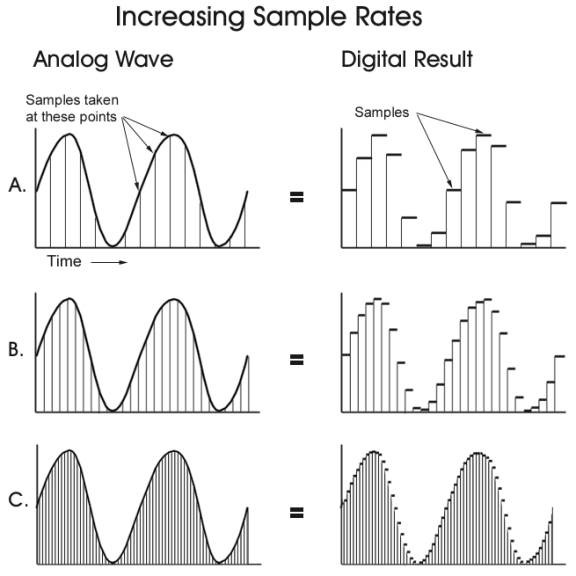

在学习音频开发之前，我们需要了解声音及音频的一些基本知识，比如声音的原理还有音频数字化。
声学基础
人耳是一个完整的听觉感知系统。引用wiki上的定义，人的听觉是，声波通过外耳和中耳组成的传音系统传递到内耳，经内耳的环能作用将声波的机械能转变为听觉神经上的神经冲动，后者传送到大脑皮层听觉中枢而产生的主观感觉。简单点说，听觉是声波引起的主观感觉。
下图是人耳的结构示意图：

从生理上分，人耳主要包括耳廓、耳道、鼓膜、听小骨、半规管、听觉神经、耳蜗和耳咽管。外耳区与空气接触，鼓膜外侧承受的是空气气压；中耳是空气不流通的腔体，但经咽鼓管连接咽喉部，平时吞咽动作是会开放咽鼓管，空气可以进入中耳达到耳压平衡。内耳耳蜗内部则是充满淋巴液的，听小骨的镫骨连接到内耳耳蜗的卵圆窗。
我们知道声音是一种纵波，振动源扰动介质发生压缩与拉伸变形，形成声波进行传播。声音传播的介质也很多，固体、液体、气体等都可以（骨传感耳机就是固体介质的一种应用）。通常来说，声波经空气的振动传导到鼓膜，鼓膜两侧的压力差，导致鼓膜振动，这是听觉的第一步。我们看一下声音在空气中传播的示意图：

上图的下半部分是声音在空气中运动的示意，上半部分是声波对大气压扰动（都是单一频率示意）。
人耳可感知的最小压力变化是大气压的十亿分之一，这种灵敏度得益于外耳和中耳结构产生的放大作用。内耳充满了流体，如果没有中耳，让鼓膜直接激发内耳，效率是很低的；再者鼓膜拾音依赖压力差，中耳的腔体正是拾音的快速压力波动的需要。
外耳道的长度平均在2.5-3cm，其一端是鼓膜，一端是开放的。这个半封闭的腔体在鼓膜处会对3-4kHz左右的声波产生共振使信号加强，另外3次谐波信号也会得到加强，这是外耳道的放大效应。而中耳道的听小骨其实是3块骨头，锤骨、砧骨、镫骨。鼓膜与锤骨相接，声音经外耳道引起鼓膜振动，再经锤骨、砧骨、镫骨的杆杠结构，将振动传递到内耳。典型的鼓膜有效振动面积55平方毫米，而连接内耳卵圆窗的镫骨底板3.2平方毫米，这个可以将波动放大17倍，再加上听小骨1.3倍的杆杠可以将声波放大22.1倍，相当于27dB。
内耳的机理则相对复杂，简单来说就是镫骨底板传动引起淋巴液沿着耳蜗基底膜的运动，基底膜顶部有很多称为“柯蒂氏器”的结构，其上有纤毛细胞、内部连接了神经纤维。基底膜及淋巴液的运动会使纤毛发生偏移，使得钾钙离子得以进入并触发神经脉冲。耳蜗大概是2.5-2.75圈，展开长度约3.2cm，这些不同位置的基底膜对不同频率的反应不同，一个脉冲即可确定频率，而声压则影响了脉冲的多少。
以上是听觉的基本过程。
声音三要素
我们对声音的感知主要体现在三方面：音阶（调）、响度和音色，音阶、响度与音色是人的主观感受。
声波的基准频率决定了声音的音高，频率越高，音调就越高、声音就越尖锐，反之声音越低沉；声波的振幅越大，声压就越大，人耳感受到响度就越大；而音色，我们要知道自然界的声音不是单一频率的，而是多种频率混合在一起的——不同的声音的基本波形是由不同的谐波组成的（用音乐的术语就是在基准音的基础上产生泛音，然后形成一个音色的）。声源除了整体的振动，还有局部的振动，不同的器质会产生不同的组合，这也就会产生音色的区别。
我们通常用分贝来表示声压的大小，贝尔是一个对数比值，而不是一个绝对的测量单位。公式中pref是参考声压振幅，prms是采样点振幅：
$$ Lp=20\lg{\frac{prms}{pref}} $$
音阶、响度与音色虽然分别对应着声音的频率、波幅以及波形，但不是等同关系。而且同等声压下，不同频率其实有不同的听觉感知的。等响度曲线就是主观测定得到的描述不同频率、声压下的一簇听觉感知曲线。

举个例子来说明等响度曲线：1kHz10dB的声音给人的听觉响度大概是10方，而对于100Hz的声音需要达到这种效果，需要将声音提高到30DB。
从上面的等响度曲线图我们可以看到，高声压比低声压有更宽的频响范围。人耳对低频声音很不敏感，而对4khz附近的频率则比较容易捕捉到。上图中曲线簇在2kHz-5kHz之间都有一个明显的下凹陷，凹陷意味着该频率下更低的声压级也能达到相同听觉感知。这段频率的高灵敏度响应是感知人声的重要条件。等响度曲线在3.5-4kHz以及13.5kHz有凹陷峰值，这是有生物学基础的，是上文提到的外耳道谐振引起的。
从模拟信号到数字音频
想象一下，声音经过麦克风，最终怎样才被记录在设备上，又是怎么被播放出来的？
自然界的信号都是模拟信号，模拟信号是时域连续信号。如果以模拟信号的形式，声音是不便于存储与传输。在现在熟悉的数字音频使用之前，声音的录制与回放其实也经历了漫长的发展过程。

1857年Scott发明的声波振记器，将声音振动转化记录到纸上，最早的声音录制设备；
1877年爱迪生发明了圆筒型唱片和留声机，声音转化为金属针的振动，波形记录在圆筒形的锡箔上；
1887年Berliner发明圆片型唱片合平面式留声机；
1898年磁性录音机在丹麦问世，利用的是剩磁原理；
1912年圆筒式录音被淘汰；
1924年电气唱片刻纹头问世；
1931年密纹唱片问世（LP唱片，黑胶唱片）；
1935年德国通用电气公司研制磁带录音机（二战后美国获得了该技术）；
1963年荷兰飞利浦公司生产音频盒式磁带；
1976年索尼公司研制出激光唱片（CD）；
1996年DVD统一格式；
1997年便携MP3播放器问世，MP3的发展基于60’s和70’s的LPC、DCT等编码研究基础；
现在很多人都知道曾经流行了40年的黑胶唱片，却不一定了解唱片的历史与未来。
在电子与信息科学广泛发展应用之前，声音只能通过物理机械记录或者磁记录的方式进行存储。磁记录是电子时代很重要的存储技术，可以利用交流偏磁原理进行音频记录，后续利用其逆向作用可以回放声音，这跟机械运动记录道理是一样的。（下图是偏磁录音原理）

无论是原始的机械记录或是磁带录音或是现在的数字音频，都是需要对声波转储以及还原，实现声音的录制跟回放。与现在的数字音频不同的是，机械记录或者磁记录的过程其实是时间连续的，而搭载在电子电路之上的数字音频，无论时间或是数值却都是离散化了。电子电路、数字信号处理的发展，使得信号可以通过电子器件进行存储、通过电路进行传输，这也把我们带进了数字音频时代。
采样与量化
音频在数字化之前，还要解决电信号转换的问题，才能搭载在电子电路上传输。拾音器与扬声器是其中非常重要的器件。
拾音器是利用电磁特性实现声音与电信号的转换。目前麦克风主要有两种，动圈式以及电容式。动圈式麦克风利用的是电磁感应原理，将线圈搭载在振膜上并置于磁场中，当声压引起振膜运动时，会在线圈中产生感应电流。而电容式麦克风则利用电容器的充放电原理，振膜改变电容极板的距离，会改变电容大小，从而引起电流。一般来说，电容式麦克风比动圈式灵敏度更高，频域也更宽。
当声音从声波转化为电信号后，要搭载在数字电路来存储传输，还必须转换为数字信号。FM/AM收音机很多人都还用过，广播的音频信号其实就是通过调频或调幅的方式搭载在载波信号上进行传输。广播的音频在传输的时候，时间是连续的，信号也是连续的。而计算机和互联网上传播的音频则不一样。
数字电路终端上的信号传输与存储，需要模数转换和数模转换，这个过程如下图所示：

模数转换的数字化过程至少需要经过采样与量化（也有内置编码），分别是时间与信号幅度的数字化。

采样就是按固定频率（即采样率）去对模拟信号进行信号强度度量，量化是对信号波幅度量并将信号强度转化为数值进行描述。采样率越高保真度越高，声音可以被还原的越好，更高的采样率意味着更多的数据量。人耳可接收的声音频率范围是20Hz-20kHz，根据奈奎斯特-香农采样定理，采样率超过40K基本可以还原所有可听到的声音了。
常见的一些采样率：
8000 Hz - 电话所用采样率， 对于人的说话已经足够
11025 Hz - 电话所用采样率
22050 Hz - 无线电广播所用采样率
32000 Hz - miniDV 数码视频 camcorder、DAT (LP mode)所用采样率
44100 Hz - 音频 CD, 也常用于 MPEG-1 音频（VCD，SVCD，MP3）所用采样率
47250 Hz - 商用 PCM 录音机所用采样率
48000 Hz - miniDV、数字电视、DVD、DAT、电影和专业音频所用的数字声音所用采样率
50000 Hz - 商用数字录音机所用采样率
96000 Hz或者 192000 Hz - DVD-Audio、一些 LPCM DVD 音轨、BD-ROM（蓝光盘）音轨、和 HD-DVD （高清晰度 DVD）音轨所用所用采样率
44.1kHz是一个常用的采样率参数，标准的CD音频就使用44.1kHz，以及16位整型的量化精度。
采样是时间维度的离散化，而量化是信号值的离散化。量化的位深影响了数字音频复现的精细程度。在声音上，16位的位深可以记录声音96db的动态范围。
采样与量化涉及到的数理基础比较多，比如低通信号的脉冲抽样、插值、信噪比等等，可以自行了解学习。
数字音频基本概念
原始的经过AD转换的数字音频数据，通常就是我们见到的PCM编码的音频，是没有压缩编码的。
一般可以通过以下这些参数，描述数字音频：
- 声道：单声道、立体声、4声道、5.1声道（杜比，.1加强人声）
- 采样率：脉冲采样频率
- 位深：采样的数值量化精度
- 帧：PCM不需要帧的概念；amr是20ms一帧，独立帧；mp3分vbr、cbr等
- 交错模式：数字音频信号存储以连续帧方式存放，先记录帧1的左右声道样本，再记录帧2的记录；非交错模式则先记录一个周期内所有帧的左声道，再记录右声道样本
- 比特率：码率，音乐每秒播放的数据量，对于PCM音频流，码率=采样率x量化位深x声道数；
What’s Next
以上便是音频以及数字音频的一些背景知识，之后我们将继续学习数字音频以及iOS开发上的音频相关的一些内容。
Author: Jason
Permalink: http://blog.knpc21.com/ios/ios-digital-audio-basic/
文章默认使用 CC BY-NC-SA 4.0 协议进行许可，使用时请注意遵守协议。
Comments